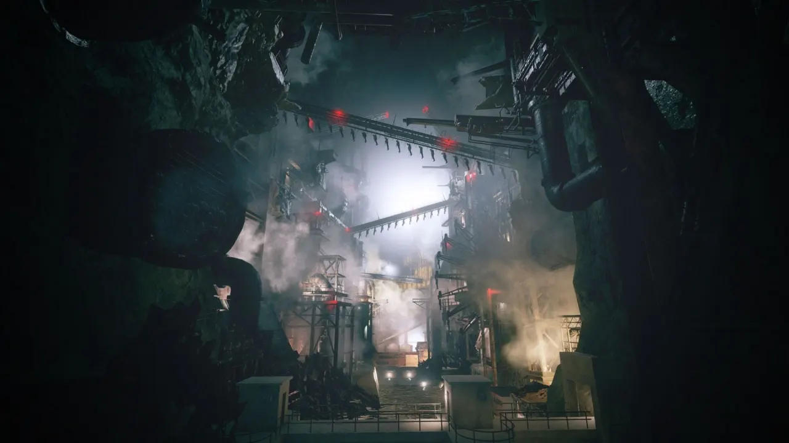
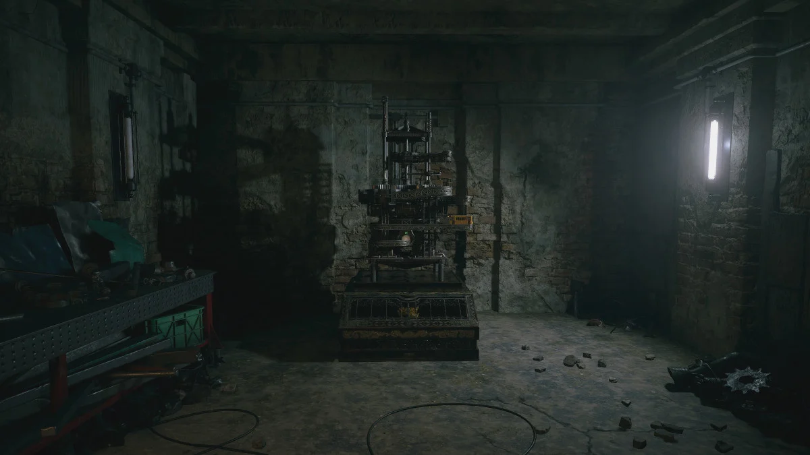

| Karl Heisenberg | |
|---|---|
| Sexe | Homme |
| Date de décés | 9 Février 2021 |
| Profession | Ingénieur |
| Statut | Décédé |
| Lieu du décès | Usine Heisenberg |
Seigneur Karl Heisenberg est un humain mutant qui vivait dans une chaine de montagne en Europe de l'Est. Génie de l'ingénierie, il est supposé être le patriarche de la famille Heisenberg. Il a hérité d'une usine située juste à l'extérieur du village et sert Mère Miranda avec les trois autres grandes familles de la région.
Heisenberg était l'un des enfants kidnappés et soumis à l'expérience du parasite Cadou et soumis à un lavage de cerveau pour être les serviteurs de Miranda. Finalement, lui, Alcina Dimitrescu, Donna Beneviento et Salvatore Moreau sont devenus les lieutenants de Miranda. Parmi les seigneurs des Quatre Maisons, Heisenberg est le seul à en vouloir à Miranda, en raison de son propre désir égoïste de faire revivre sa défunte fille et de la façon dont il voit la famille de Miranda comme des « expériences ». Heisenberg planifie secrètement une rébellion et a même tenté à un moment donné de persuader Ethan Winters de le rejoindre, mais ce dernier refuse. La famille Heisenberg était étroitement associée aux familles nobles Beneviento, Moreau et Dimitrescu, et a maintenu une alliance avec elles pour contrôler la région même si lui et Alcina Dimitrescu ne semblent pas trop s'aimer car Alcina le voyait comme un petit garçon avec une loyauté envers Miranda discutable. Ce contrôle a permis à la famille de Heisenberg de diriger leur usine avec une cruauté barbare. Selon des sources, il s'éloignait rarement de l'usine et se tenait principalement dans ses murs.
Outre ses capacités de régénération et sa mutation grâce au Cadou, la mutation de Heisenberg lui a fourni des organes électriques similaires aux poissons du genre Torpedo, lui permettant de contrôler les champs magnétiques pour déplacer des objets métalliques. Heisenberg se transforme plus tard en étirant son corps et en répandant sa biomasse à travers un grand appareil mécanique qu'il assemble dans et autour de sa chair, devenant un mutant cybernétique. Il est considéré comme le plus fort des quatre seigneurs et celui avec la mutation la plus stable.
Source : Resident Evil Fandom
Site officiel Resident Evil Village